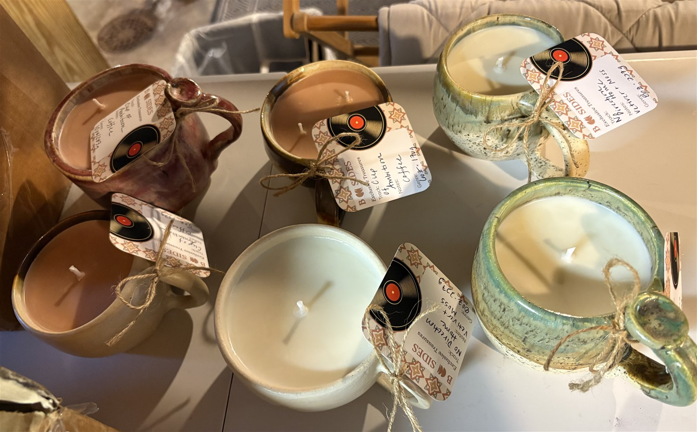
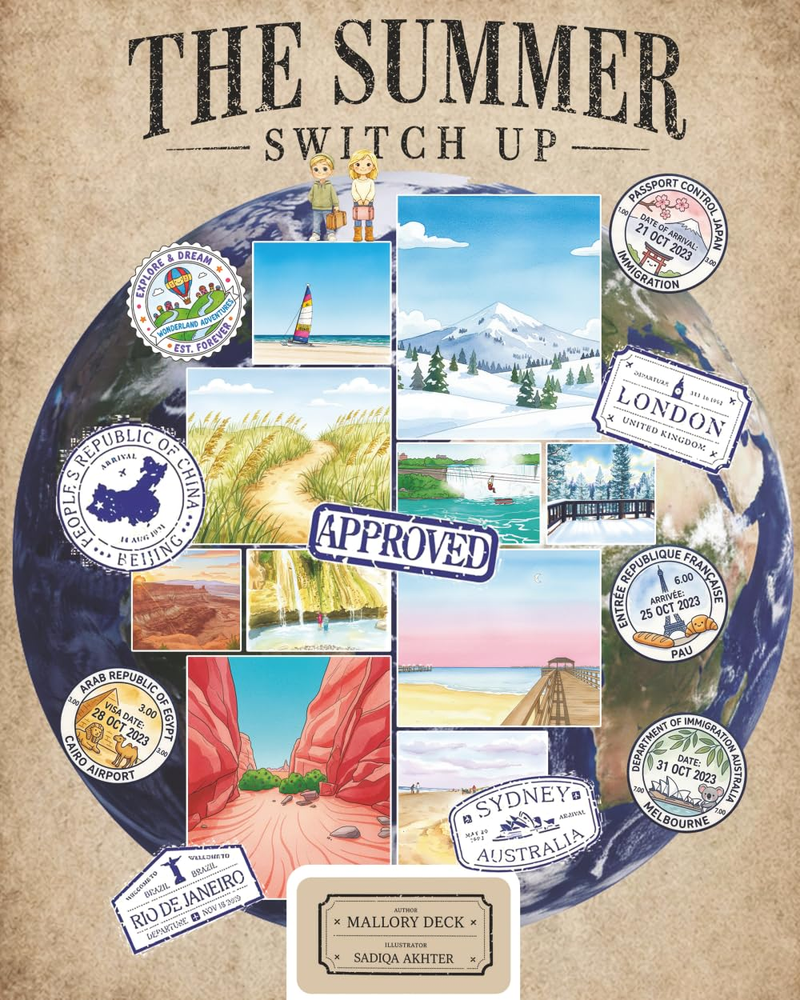

Featured pottery · Original photograph
Mug candles
A handmade mug with a warm glow. Ask about available pieces, scents and prices.
Enquire about mug candles ↗The Almost Home collection
Handmade pottery, thoughtful gifts and stories to keep.
Each piece brings a little character home.
Cutout product images are AI-enhanced from the maker’s photographs. Fine glaze details may vary.

A handmade mug with a warm glow. Ask about available pieces, scents and prices.
Enquire about mug candles ↗
Something made just for you
Explore custom carpentry, woodworking and home design.
Explore custom work ↗